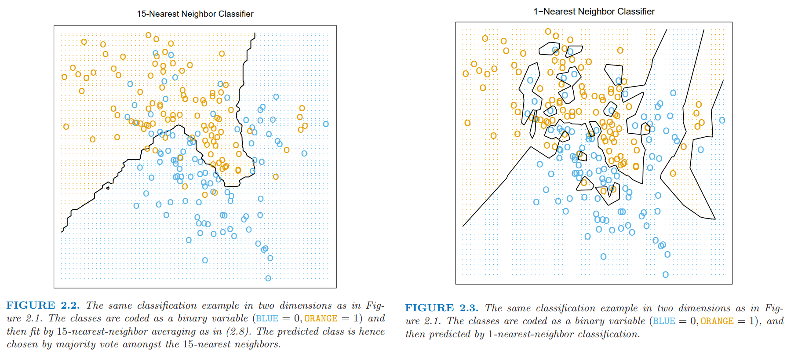
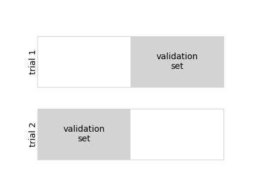
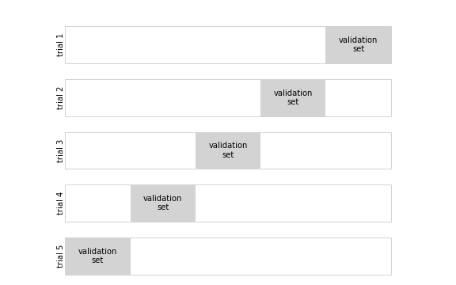
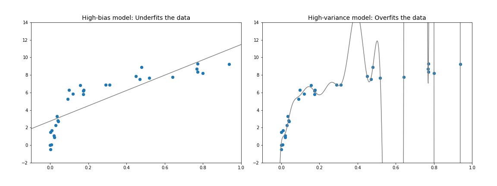
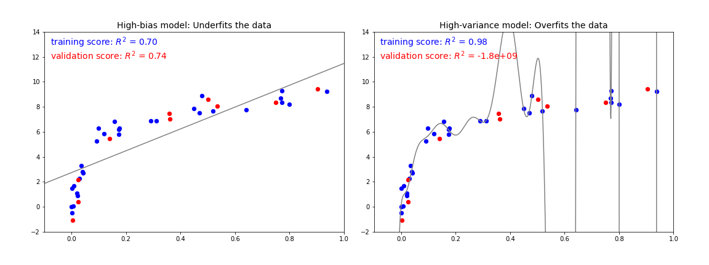
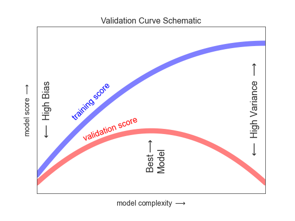
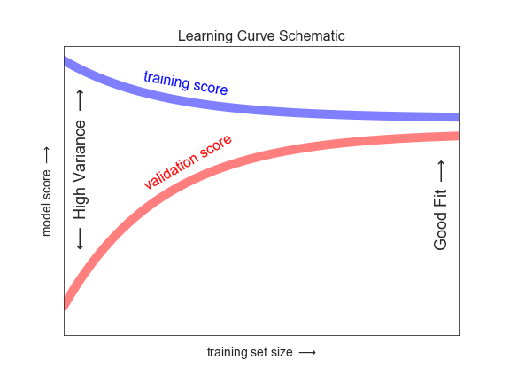

Hyperparameters and Model Validation#
In the previous chapter, we saw the basic recipe for applying a supervised machine learning model:
Choose a class of model.
Choose model hyperparameters.
Fit the model to the training data.
Use the model to predict labels for new data.
The first two pieces of this—the choice of model and choice of hyperparameters—are perhaps the most important part of using these tools and techniques effectively. In order to make informed choices, we need a way to validate that our model and our hyperparameters are a good fit to the data. While this may sound simple, there are some pitfalls that you must avoid to do this effectively.
Thinking About Model Validation#
In principle, model validation is very simple: after choosing a model and its hyperparameters, we can estimate how effective it is by applying it to some of the training data and comparing the predictions to the known values.
This section will first show a naive approach to model validation and why it fails, before exploring the use of holdout sets and cross-validation for more robust model evaluation.
Model Validation the Wrong Way#
Let’s start with the naive approach to validation using the Iris dataset, which we saw in the previous chapter. We will start by loading the data:
from sklearn.datasets import load_iris
iris = load_iris()
X = iris.data
y = iris.target
Next, we choose a model and hyperparameters. Here we’ll use a k-nearest neighbors classifier with n_neighbors=1.
This is a very simple and intuitive model that says “the label of an unknown point is the same as the label of its closest training point”:
from sklearn.neighbors import KNeighborsClassifier
model = KNeighborsClassifier(n_neighbors=1)
Then we ~~train~~ fit the model, and use it to predict labels for data whose labels we already know:
model.fit(X, y)
y_model = model.predict(X)
Finally, we compute the fraction of correctly labeled points:
from sklearn.metrics import accuracy_score
accuracy_score(y, y_model)
1.0
We see an accuracy score of 1.0, which indicates that 100% of points were correctly labeled by our model! But is this truly measuring the expected accuracy? Have we really come upon a model that we expect to be correct 100% of the time?
As you may have gathered, the answer is no. In fact, this approach contains a fundamental flaw: it trains and evaluates the model on the same data. Furthermore, this nearest neighbor model is an instance-based estimator that simply stores the training data, and predicts labels by comparing new data to these stored points: except in contrived cases, it will get 100% accuracy every time!
Is there an example with kNN (k=1) and accuracy not equal 100% on training data?
A note on kNN from section 2.3.2 (Nearest-Neighbor Methods) of ESL [HTF09]

Model Validation the Right Way: Holdout Sets#
So what can be done?
A better sense of a model’s performance can be found by using what’s known as a holdout set: that is, we hold back some subset of the data from the training of the model, and then use this holdout set to check the model’s performance.
This splitting can be done using the train_test_split utility in Scikit-Learn:
from sklearn.model_selection import train_test_split
# split the data with 50% in each set
X1, X2, y1, y2 = train_test_split(X, y, random_state=0,
train_size=0.5)
# fit the model on one set of data
model.fit(X1, y1)
# evaluate the model on the second set of data
y2_model = model.predict(X2)
accuracy_score(y2, y2_model)
0.9066666666666666
We see here a more reasonable result: the one-nearest-neighbor classifier is about 90% accurate on this holdout set. The holdout set is similar to unknown data, because the model has not “seen” it before.
Model Validation via Cross-Validation#
One disadvantage of using a holdout set for model validation is that we have lost a portion of our data to the model training. In the preceding case, half the dataset does not contribute to the training of the model! This is not optimal, especially if the initial set of training data is small.
One way to address this is to use cross-validation; that is, to do a sequence of fits where each subset of the data is used both as a training set and as a validation set. Visually, it might look something like the following figure:

Here we do two validation trials, alternately using each half of the data as a holdout set. Using the split data from earlier, we could implement it like this:
y2_model = model.fit(X1, y1).predict(X2)
y1_model = model.fit(X2, y2).predict(X1)
accuracy_score(y1, y1_model), accuracy_score(y2, y2_model)
(0.96, 0.9066666666666666)
What comes out are two accuracy scores, which we could combine (by, say, taking the mean) to get a better measure of the global model performance. This particular form of cross-validation is a two-fold cross-validation—that is, one in which we have split the data into two sets and used each in turn as a validation set.
We could expand on this idea to use even more trials, and more folds in the data—for example, the following figure shows a visual depiction of five-fold cross-validation.

Here we split the data into five groups, and use each of them in turn to evaluate the model fit on the other four-fifths of the data.
This would be rather tedious to do by hand, but we can use Scikit-Learn’s cross_val_score convenience routine to do it succinctly:
from sklearn.model_selection import cross_val_score
cross_val_score(model, X, y, cv=5)
array([0.96666667, 0.96666667, 0.93333333, 0.93333333, 1. ])
Repeating the validation across different subsets of the data gives us an even better idea of the performance of the algorithm.
Scikit-Learn implements a number of cross-validation schemes that are useful in particular situations; these are implemented via iterators in the model_selection module.
For example, we might wish to go to the extreme case in which our number of folds is equal to the number of data points: that is, we train on all points but one in each trial.
This type of cross-validation is known as leave-one-out cross validation, and can be used as follows:
from sklearn.model_selection import LeaveOneOut
scores = cross_val_score(model, X, y, cv=LeaveOneOut())
scores
array([1., 1., 1., 1., 1., 1., 1., 1., 1., 1., 1., 1., 1., 1., 1., 1., 1.,
1., 1., 1., 1., 1., 1., 1., 1., 1., 1., 1., 1., 1., 1., 1., 1., 1.,
1., 1., 1., 1., 1., 1., 1., 1., 1., 1., 1., 1., 1., 1., 1., 1., 1.,
1., 1., 1., 1., 1., 1., 1., 1., 1., 1., 1., 1., 1., 1., 1., 1., 1.,
1., 1., 0., 1., 0., 1., 1., 1., 1., 1., 1., 1., 1., 1., 1., 0., 1.,
1., 1., 1., 1., 1., 1., 1., 1., 1., 1., 1., 1., 1., 1., 1., 1., 1.,
1., 1., 1., 1., 0., 1., 1., 1., 1., 1., 1., 1., 1., 1., 1., 1., 1.,
0., 1., 1., 1., 1., 1., 1., 1., 1., 1., 1., 1., 1., 1., 0., 1., 1.,
1., 1., 1., 1., 1., 1., 1., 1., 1., 1., 1., 1., 1., 1.])
Because we have 150 samples, the leave-one-out cross-validation yields scores for 150 trials, and each score indicates either a successful (1.0) or an unsuccessful (0.0) prediction. Taking the mean of these gives an estimate of the error rate:
scores.mean()
0.96
Other cross-validation schemes can be used similarly.
For a description of what is available in Scikit-Learn, use IPython to explore the sklearn.model_selection submodule, or take a look at Scikit-Learn’s cross-validation documentation.
Selecting the Best Model#
Now that we’ve explored the basics of validation and cross-validation, we will go into a little more depth regarding model selection and selection of hyperparameters. These issues are some of the most important aspects of the practice of machine learning, but I find that this information is often glossed over in introductory machine learning tutorials.
Of core importance is the following question: if our estimator is underperforming, how should we move forward? There are several possible answers:
Use a more complicated/more flexible model.
Use a less complicated/less flexible model.
Gather more training samples.
Gather more data to add features to each sample.
The answer to this question is often counterintuitive. In particular, sometimes using a more complicated model will give worse results, and adding more training samples may not improve your results! The ability to determine what steps will improve your model is what separates the successful machine learning practitioners from the unsuccessful.
The Bias-Variance Trade-off#
Fundamentally, finding “the best model” is about finding a sweet spot in the trade-off between bias and variance. Consider the following figure, which presents two regression fits to the same dataset.

It is clear that neither of these models is a particularly good fit to the data, but they fail in different ways.
The model on the left attempts to find a straight-line fit through the data. Because in this case a straight line cannot accurately split the data, the straight-line model will never be able to describe this dataset well. Such a model is said to underfit the data: that is, it does not have enough flexibility to suitably account for all the features in the data. Another way of saying this is that the model has high bias.
The model on the right attempts to fit a high-order polynomial through the data. Here the model fit has enough flexibility to nearly perfectly account for the fine features in the data, but even though it very accurately describes the training data, its precise form seems to be more reflective of the particular noise properties of the data than of the intrinsic properties of whatever process generated that data. Such a model is said to overfit the data: that is, it has so much flexibility that the model ends up accounting for random errors as well as the underlying data distribution. Another way of saying this is that the model has high variance.
To look at this in another light, consider what happens if we use these two models to predict the y-values for some new data. In the plots in the following figure, the red/lighter points indicate data that is omitted from the training set.

The score here is the \(R^2\) score, or coefficient of determination, which measures how well a model performs relative to a simple mean of the target values. \(R^2=1\) indicates a perfect match, \(R^2=0\) indicates the model does no better than simply taking the mean of the data, and negative values mean even worse models.
If we imagine that we have some ability to tune the model complexity, we would expect the training score and validation score to behave as illustrated in the following figure:

The diagram shown here is often called a validation curve, and we see the following features:
The training score is everywhere higher than the validation score. This is generally the case: the model will be a better fit to data it has seen than to data it has not seen.
For very low model complexity (a high-bias model), the training data is underfit, which means that the model is a poor predictor both for the training data and for any previously unseen data.
For very high model complexity (a high-variance model), the training data is overfit, which means that the model predicts the training data very well, but fails for any previously unseen data.
For some intermediate value, the validation curve has a maximum. This level of complexity indicates a suitable trade-off between bias and variance.
The means of tuning the model complexity varies from model to model; when we discuss individual models in depth in later chapters, we will see how each model allows for such tuning.
For further information about Bias-Variance Tradeoff, see this section of Mathematical Foundations of Data Science Course at FUM-CS.
Validation Curves in Scikit-Learn#
Let’s look at an example of using cross-validation to compute the validation curve for a class of models. Here we will use a polynomial regression model: this is a generalized linear model in which the degree of the polynomial is a tunable parameter. For example, a degree-1 polynomial fits a straight line to the data; for model parameters \(a\) and \(b\):
A degree-3 polynomial fits a cubic curve to the data; for model parameters \(a, b, c, d\):
We can generalize this to any number of polynomial features. In Scikit-Learn, we can implement this with a linear regression classifier combined with the polynomial preprocessor. We will use a pipeline to string these operations together (we will discuss polynomial features and pipelines more fully in Feature Engineering):
from sklearn.preprocessing import PolynomialFeatures
from sklearn.linear_model import LinearRegression
from sklearn.pipeline import make_pipeline
def PolynomialRegression(degree=2, **kwargs):
return make_pipeline(PolynomialFeatures(degree),
LinearRegression(**kwargs))
Now let’s create some data to which we will fit our model:
import numpy as np
def make_data(N, err=1.0, rseed=1):
# randomly sample the data
rng = np.random.RandomState(rseed)
X = rng.rand(N, 1) ** 2
y = 10 - 1. / (X.ravel() + 0.1)
if err > 0:
y += err * rng.randn(N)
return X, y
X, y = make_data(40)
We can now visualize our data, along with polynomial fits of several degrees (see the following figure):
%matplotlib inline
import matplotlib.pyplot as plt
plt.style.use('seaborn-whitegrid')
X_test = np.linspace(-0.1, 1.1, 500)[:, None]
plt.scatter(X.ravel(), y, color='black')
axis = plt.axis()
for degree in [1, 3, 5]:
y_test = PolynomialRegression(degree).fit(X, y).predict(X_test)
plt.plot(X_test.ravel(), y_test, label='degree={0}'.format(degree))
plt.xlim(-0.1, 1.0)
plt.ylim(-2, 12)
plt.legend(loc='best');
The knob controlling model complexity in this case is the degree of the polynomial, which can be any nonnegative integer. A useful question to answer is this: what degree of polynomial provides a suitable trade-off between bias (underfitting) and variance (overfitting)?
We can make progress in this by visualizing the validation curve for this particular data and model; this can be done straightforwardly using the validation_curve convenience routine provided by Scikit-Learn.
Given a model, data, parameter name, and a range to explore, this function will automatically compute both the training score and the validation score across the range (see the following figure):
from sklearn.model_selection import validation_curve
degree = np.arange(0, 21)
train_score, val_score = validation_curve(
PolynomialRegression(), X, y,
param_name='polynomialfeatures__degree',
param_range=degree, cv=7)
plt.plot(degree, np.median(train_score, 1),
color='blue', label='training score')
plt.plot(degree, np.median(val_score, 1),
color='red', label='validation score')
plt.legend(loc='best')
plt.ylim(0, 1)
plt.xlabel('degree')
plt.ylabel('score');
This shows precisely the qualitative behavior we expect: the training score is everywhere higher than the validation score, the training score is monotonically improving with increased model complexity, and the validation score reaches a maximum before dropping off as the model becomes overfit.
From the validation curve, we can determine that the optimal trade-off between bias and variance is found for a third-order polynomial. We can compute and display this fit over the original data as follows (see the following figure):
plt.scatter(X.ravel(), y)
lim = plt.axis()
y_test = PolynomialRegression(3).fit(X, y).predict(X_test)
plt.plot(X_test.ravel(), y_test)
plt.axis(lim)
Notice that finding this optimal model did not actually require us to compute the training score, but examining the relationship between the training score and validation score can give us useful insight into the performance of the model.
Learning Curves#
One important aspect of model complexity is that the optimal model will generally depend on the size of your training data. For example, let’s generate a new dataset with five times as many points (see the following figure):
X2, y2 = make_data(200)
plt.scatter(X2.ravel(), y2)
Now let’s duplicate the preceding code to plot the validation curve for this larger dataset; for reference, we’ll overplot the previous results as well (see the following figure):
degree = np.arange(21)
train_score2, val_score2 = validation_curve(
PolynomialRegression(), X2, y2,
param_name='polynomialfeatures__degree',
param_range=degree, cv=7)
plt.plot(degree, np.median(train_score2, 1),
color='blue', label='training score')
plt.plot(degree, np.median(val_score2, 1),
color='red', label='validation score')
plt.plot(degree, np.median(train_score, 1),
color='blue', alpha=0.3, linestyle='dashed')
plt.plot(degree, np.median(val_score, 1),
color='red', alpha=0.3, linestyle='dashed')
plt.legend(loc='lower center')
plt.ylim(0, 1)
plt.xlabel('degree')
plt.ylabel('score')

The solid lines show the new results, while the fainter dashed lines show the results on the previous smaller dataset. It is clear from the validation curve that the larger dataset can support a much more complicated model: the peak here is probably around a degree of 6, but even a degree-20 model is not seriously overfitting the data—the validation and training scores remain very close.
So, the behavior of the validation curve has not one but two important inputs: the model complexity and the number of training points. We can gain further insight by exploring the behavior of the model as a function of the number of training points, which we can do by using increasingly larger subsets of the data to fit our model. A plot of the training/validation score with respect to the size of the training set is sometimes known as a learning curve.
The general behavior we would expect from a learning curve is this:
A model of a given complexity will overfit a small dataset: this means the training score will be relatively high, while the validation score will be relatively low.
A model of a given complexity will underfit a large dataset: this means that the training score will decrease, but the validation score will increase.
A model will never, except by chance, give a better score to the validation set than the training set: this means the curves should keep getting closer together but never cross.
With these features in mind, we would expect a learning curve to look qualitatively like that shown in the following figure:

The notable feature of the learning curve is the convergence to a particular score as the number of training samples grows. In particular, once you have enough points that a particular model has converged, adding more training data will not help you! The only way to increase model performance in this case is to use another (often more complex) model.
Learning Curves in Scikit-Learn#
Scikit-Learn offers a convenient utility for computing such learning curves from your models; here we will compute a learning curve for our original dataset with a second-order polynomial model and a ninth-order polynomial (see the following figure):
from sklearn.model_selection import learning_curve
fig, ax = plt.subplots(1, 2, figsize=(16, 6))
fig.subplots_adjust(left=0.0625, right=0.95, wspace=0.1)
for i, degree in enumerate([2, 9]):
N, train_lc, val_lc = learning_curve(
PolynomialRegression(degree), X, y, cv=7,
train_sizes=np.linspace(0.3, 1, 25))
ax[i].plot(N, np.mean(train_lc, 1),
color='blue', label='training score')
ax[i].plot(N, np.mean(val_lc, 1),
color='red', label='validation score')
ax[i].hlines(np.mean([train_lc[-1], val_lc[-1]]), N[0],
N[-1], color='gray', linestyle='dashed')
ax[i].set_ylim(0, 1)
ax[i].set_xlim(N[0], N[-1])
ax[i].set_xlabel('training size')
ax[i].set_ylabel('score')
ax[i].set_title('degree = {0}'.format(degree), size=14)
ax[i].legend(loc='best')
This is a valuable diagnostic, because it gives us a visual depiction of how our model responds to increasing amounts of training data. In particular, when the learning curve has already converged (i.e., when the training and validation curves are already close to each other) adding more training data will not significantly improve the fit! This situation is seen in the left panel, with the learning curve for the degree-2 model.
The only way to increase the converged score is to use a different (usually more complicated) model. We see this in the right panel: by moving to a much more complicated model, we increase the score of convergence (indicated by the dashed line), but at the expense of higher model variance (indicated by the difference between the training and validation scores). If we were to add even more data points, the learning curve for the more complicated model would eventually converge.
Plotting a learning curve for your particular choice of model and dataset can help you to make this type of decision about how to move forward in improving your analysis.
Validation in Practice: Grid Search#
The preceding discussion is meant to give you some intuition into the trade-off between bias and variance, and its dependence on model complexity and training set size. In practice, models generally have more than one knob to turn, meaning plots of validation and learning curves change from lines to multidimensional surfaces. In these cases, such visualizations are difficult, and we would rather simply find the particular model that maximizes the validation score.
Scikit-Learn provides some tools to make this kind of search more convenient: here we’ll consider the use of grid search to find the optimal polynomial model.
We will explore a two-dimensional grid of model features, namely the polynomial degree and the flag telling us whether to fit the intercept.
This can be set up using Scikit-Learn’s GridSearchCV meta-estimator:
from sklearn.model_selection import GridSearchCV
param_grid = {'polynomialfeatures__degree': np.arange(21),
'linearregression__fit_intercept': [True, False]}
grid = GridSearchCV(PolynomialRegression(), param_grid, cv=7)
Notice that like a normal estimator, this has not yet been applied to any data.
Calling the fit method will fit the model at each grid point, keeping track of the scores along the way:
grid.fit(X, y)
Now that the model is fit, we can ask for the best parameters as follows:
grid.best_params_
{'linearregression__fit_intercept': False, 'polynomialfeatures__degree': 4}
Finally, if we wish, we can use the best model and show the fit to our data using code from before (see the following figure):
model = grid.best_estimator_
plt.scatter(X.ravel(), y)
lim = plt.axis()
y_test = model.fit(X, y).predict(X_test)
plt.plot(X_test.ravel(), y_test)
plt.axis(lim)
Other options in GridSearchCV include the ability to specify a custom scoring function, to parallelize the computations, to do randomized searches, and more.
For more information, see the examples in Kernel Density Estimation and Feature Engineering: Working with Images, or refer to Scikit-Learn’s grid search documentation.
Summary#
In this chapter we began to explore the concept of model validation and hyperparameter optimization, focusing on intuitive aspects of the bias–variance trade-off and how it comes into play when fitting models to data. In particular, we found that the use of a validation set or cross-validation approach is vital when tuning parameters in order to avoid overfitting for more complex/flexible models.
In later chapters, we will discuss the details of particularly useful models, what tuning is available for these models, and how these free parameters affect model complexity. Keep the lessons of this chapter in mind as you read on and learn about these machine learning approaches!
Further Reading#
Bias-Variance Tradeoff section of Mathematical Foundations of Data Science Course at FUM-CS
KNN in image matting: MSc. Thesis of Farzad Zandi [Zan18]
Voronoi diagram
Voronoi diagram: different metrics, see its Wiki page
Voronoi Diagrams, by Francesco Bellelli: Delaunay Triangulation and k-means clustering